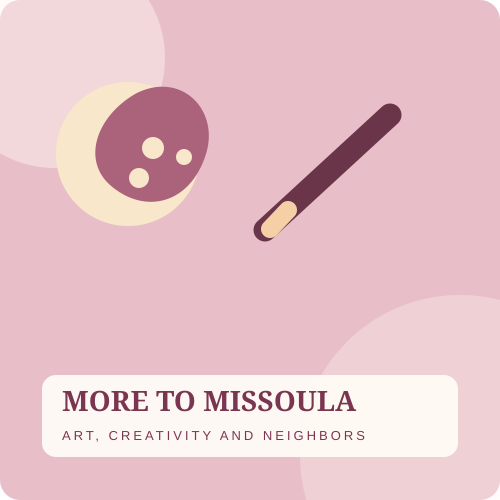

October 30, 2026 · Arts + Culture
Creative spaces help a community connect.

This is a sample article page for the Flexbox lesson's working Read More link.
Finding your place
Not every community gathering needs to involve competition. Creative workshops, open studios, and other low-pressure activities make room for neighbors with different interests to share a space.
More to Missoula is an educational website concept that explores how to make those options easier to discover. The actual events would need to be provided and approved by the client.
Browse sample activities